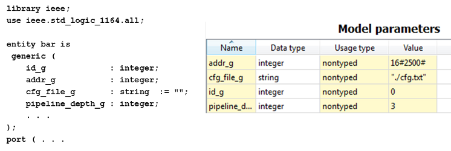

Model parameters editor can be used to add, remove and modify the model parameters of a component. Model parameters are often used in HDL configure component instances. They represent e.g VHDL generics and Verilog module parameters.
All columns of the editor are editable. Double-clicking an empty space adds a new row.
Name column is mandatory. Display name provides a more user-friendly name for the model parameter. Description is free text for further details.
Legal data type depends on the language of the model. For example in VHDL this could be 'integer' or 'std_logic', whereas in C-language int or 'char*' could be used.
Type is an optional constraint for the type to which the model parameter value resolves. Possible types are:
Value contains the mandatory default value of the model parameter. This value can be overridden in a design that instantiates this component. The value is given in SystemVerilog format and may be given as an equation. Any other text must be enclosed within quotes e.g. "Any text".
By selecting a choice, the user can restrict the allowed model parameter values to a set of predefined values. Possible values are defined in the choices of the containing component.
Minimum value and maximum value define the lower and upper boundary for the model parameter value. If the selected type is bit or string, these fields have no effect.
OO usage specifies how this model parameter is used. Default is 'non-typed' since such parameters are found in all languages, i.e. all VHDL types are non-typed. 'Typed' parameters appear in object-oriented languages, i.e. in C++.
Resolve specifies the configuration of the model parameter. Possible resolve values are:
Bit width defines the length of the bit string that stores the value. f(x) means that the value can be given as an equation.
Array size specifies the array dimension for the model parameter in an output language e.g. Verilog. f(x) means that the value can be given as an equation.
Array offset specifies the starting point in the array dimension in an output language e.g. Verilog. f(x) means that the value can be given as an equation.
Usage count displays the number of references made to this parameter. Selecting the usage count of a parameter displays a reference analysis for it. The usage count can not be changed manually.
Model parameters editor contains a context menu (rigth mouse button) that has the following options:
EXAMPLE. Figure shows the relation between VHDL and model parameter editor. Note that IP-XACT requires default value even if VHDL does not. 